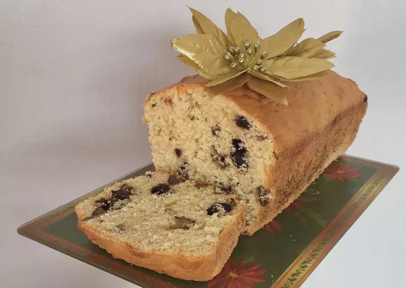

- Ingredientes:
- 10 raciones
- 100 grs manteca
- 3/4 taza azúcar
- 2 huevos
- 2 y 1/2 tazas harina 0000
- 1 cda polvo de hornear
- 1 taza leche
- Chorro esencia de vainilla
- C/n chorro de limón
- Opcional:
- 100 grs pasas de uva con chocolate o chispas de chocolate
- 100 grs nueces
- En un bowl, con batidora de mano o globo de cocina batir la manteca pomada con el azúcar hasta formar una crema blanquecina.
- Agregar los huevos y la leche en forma de hilo y mientras seguir batiendo.
- Agregar la harina con el polvo de hornear e incorporar con movimientos envolventes con espátula/cuchara.
- Poner las pasas de uva/chispas de chocolate/nueces (estas últimas cortadas en pedazos más chicos) en un bowl con 2 cdas de harina y mezclar todo. La harina es para que al cocinar el budín, estos ingredientes no se bajen y se concentren en el piso del budín.
- Incorporar con movimientos envolventes.
- Verter la mezcla en una budinera/tortera previamente enmantecada y enharinada y mandar al horno precalentado a 180 grados durante 1 hora y 15 minutos aprox., o hasta que puedan pinchar con un cuchillo y no salga masa cruda.
- Disfrutar! Espero sus fotos de cuando lo hagan